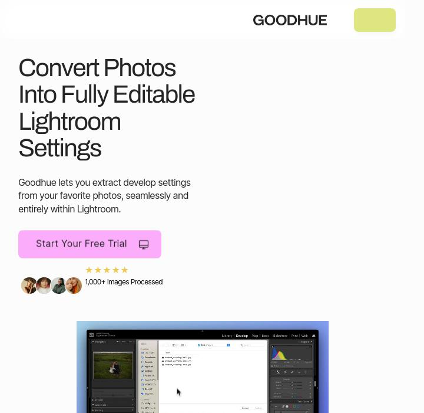

03 April, 2024
Pushing the Limits of Color
Are you ready to take your filmmaking to the next level? Look no further than Mixgrade.com, the groundbreaking platform that’s pushing the limits of color and transforming the way filmmakers work with Log Footage.
Read More

08 April, 2024
Read More
Stuck On An Edit in Lightroom?
Have you ever found yourself in the labyrinth of photo editing, endlessly tweaking sliders and struggling to bring your vision to life in Adobe Lightroom?
Read More
10 April, 2024
What is Color Grading?
In the ever-evolving world of photography and video editing, there’s a crucial step that often goes unnoticed by the untrained eye but makes all the difference in the final outcome: color grading.
Read More